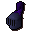
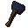
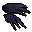
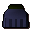
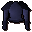

Mithril bar
| Config name | mithril_bar |
| Item id | 2359 |
| Value | 300 gp |
| Weight | 56oz |
| Members | No |
| Tradeable | Yes |
| Stackable | No |
| Defined in | scripts/skill_smithing/configs/smelting/smelting.obj |
Mithril bar
It's a bar of mithril.
How to make
| Skill | Level | XP | Ingredients | Tool | How | Where | Makes |
|---|---|---|---|---|---|---|---|
| Smithing | 50 | 30.0 | interface | furnace | 1 smelting |
Used to make
| Skill | Level | XP | Ingredients | Tool | How | Where | Makes |
|---|---|---|---|---|---|---|---|
| Smithing | 50 | 50.0 | interface | anvil | |||
| Smithing | 51 | 50.0 | interface | anvil | |||
| Smithing | 52 | 50.0 | interface | anvil | |||
| Smithing | 53 | 50.0 | interface | anvil | |||
| Smithing | 54 | 50.0 | interface | anvil | |||
| Smithing | 54 | 50.0 | interface | anvil | |||
| Smithing | 55 | 50.0 | interface | anvil | |||
| Smithing | 55 | 100.0 | interface | anvil | |||
| Smithing | 56 | 100.0 | interface | anvil | |||
| Smithing | 57 | 100.0 | interface | anvil |  Mithril full helm | ||
| Smithing | 57 | 50.0 | interface | anvil | |||
| Smithing | 58 | 100.0 | interface | anvil | |||
| Smithing | 59 | 150.0 | interface | anvil |  Mithril warhammer | ||
| Smithing | 60 | 150.0 | interface | anvil | |||
| Smithing | 61 | 150.0 | interface | anvil | |||
| Smithing | 62 | 150.0 | interface | anvil | |||
| Smithing | 63 | 100.0 | interface | anvil |  Mithril claws | ||
| Smithing | 64 | 150.0 | interface | anvil | |||
| Smithing | 66 | 150.0 | interface | anvil | |||
| Smithing | 66 | 150.0 | interface | anvil |  Mithril plateskirt | ||
| Smithing | 68 | 250.0 | interface | anvil |  Mithril platebody |
Dropped by
| NPC | Level | Quantity | Rarity | Via | Notes |
|---|---|---|---|---|---|
| 48 | 1 | 3/64 (4.69%) | |||
| 48 | 1 | 1/32 (3.12%) | |||
| 62 | 1 | 1/128 (0.78%) | |||
| 62 | 1 | 1/128 (0.78%) | |||
| 62 | 1 | 1/128 (0.78%) | |||
| 62 | 1 | 1/128 (0.78%) |
Referenced in scripts
scripts/_test/scripts/cheats/cheat_bank.rs2scripts/areas/area_wilderness/scripts/lava_maze.rs2scripts/drop tables/scripts/chaos_dwarf.rs2scripts/drop tables/scripts/death_ig_solider_wander.rs2scripts/drop tables/scripts/paladin.rs2scripts/drop tables/scripts/shadow_warrior.rs2scripts/skill_smithing/scripts/smithing/smithing.rs2